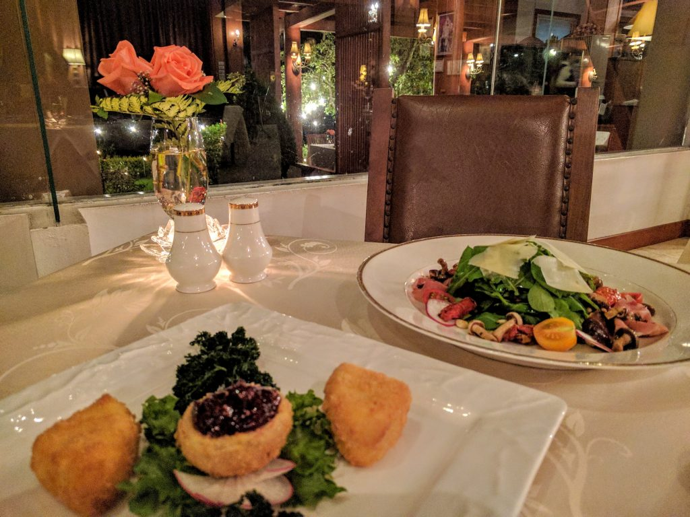
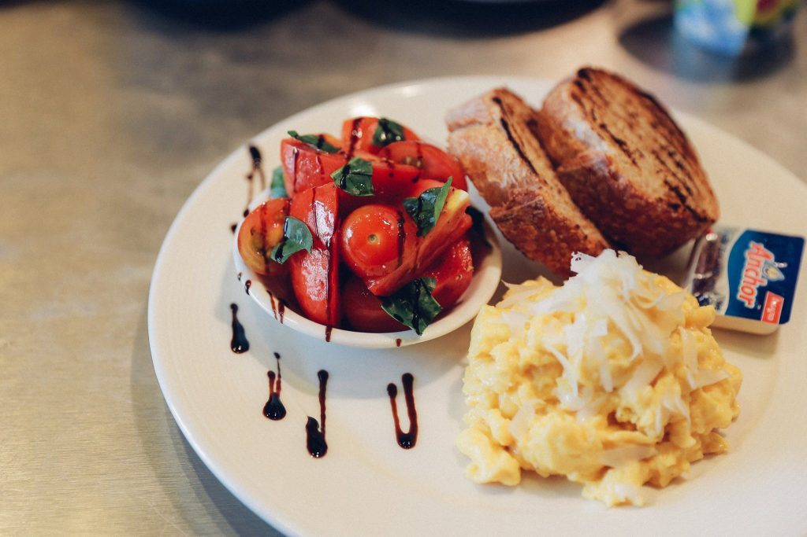
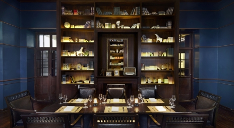
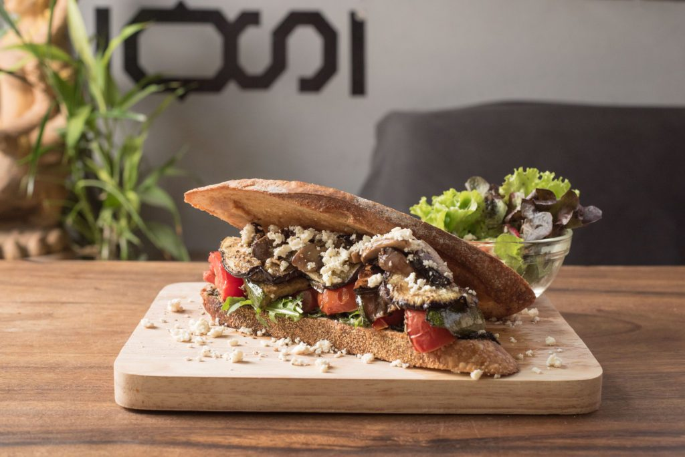

Chiang Mai is a vegetarian’s heaven! Finding quality vegetarian and vegan food throughout most of Thailand can be tricky, but Chiang Mai is the exception. The city is well served with some of the most flavoursome, nutritious and exciting food for vegetarians and vegans (thanks to all the Buddhist temples and monks in the city). The main cuisines are Western and Thai dishes, but there are also French, Italian, Mexican, Middle Eastern and even Peruvian food to satisfy any tastes, and in fact most restaurants in the city can easily adapt to vegetarians (including the Burger joints), and even vegan versions of traditional Thai staples such as Pad Thai, Green Papaya Salad and the Northern Lanna favourite Kao Soi can be found in Chiang Mai – and sometimes they taste better than the meat version!
If you are a new vegetarian in town, or if you want to partake in the delicious yearly vegetarian festival here (20th – 28th October 2017), then here is your guide to a week of amazing food. ENJOY!
Friday 20th October
Breakfast – Woo Café
This café is a relaxed and indulgently creative environment that combines food and contemporary art with a stylish lifestyle shop. Woo is decorated with flowers and plants, and although you are indoors, you might feel like you are sitting in a floral garden. The café menu contains both traditional Thai and Western dishes and something a little different with Woo Café specialty fusion dishes. Spend the whole morning immersing yourself in ‘food’ for the senses but be sure to leave room for cake. Open daily from 10am.
Address: 80 Charoenrat Road, Wat Gate, Chiang Mai

Lunch – Reform Kafe (fully Vegan)
A Garden restaurant at the Green Tiger Guest House serving veggie and fully vegan western and traditional Thai dishes including comforting soups, delicious veggie burgers, spicy green curry, local Khao Soi. Near to the Fah Lanna spa if you fancied a morning or afternoon of pampering or close to some of the Old Cities many beautiful temples. Open Mon- Sat 11:00 – 20.30 and Sun 11:00 – 16:00.
Address: Sripoom Road, Lane 7, Chiang Mai
Dinner – La Terrasse – Vegetarian friendly
A Parisian inspired French bistro in the heart of the Old City close to Tha Phae gate and the Night Bazaar. The restaurant is run by a father and son team, with an authentic menu of ‘homemade’ quality produce in a traditional French style. Open 17:00 – 22:30 (closed Sunday)
Address: 69 Kotchasarn Road, Chiang Mai
Saturday 21st October
Breakfast – Nana’ Bakery or Nana Jungle
The home of the baker and founder of the Nana bakeries that are scattered across town is opened up every Saturday morning to lovers of bread and croissants. He is the undisputed king of bread in Chiang Mai, and while the Saturday morning market in ‘farang farm’ is a trek, it is more than worth it for the sweet delights. There is a range of veggie options and a few vegan treats too. As well as bread, croissants, muffins and pizza, there are other stalls selling coffee, probiotics, jam and a range of other ‘made in Chiang Mai‘ items! Starts from 7am and by 9.30am everything is sold out!
The ‘Jungle’ option is North West at the base of Doi Suthep in Suan Pailom Village. The easiest way to find it is to head to Kireethara Boutique resort and follow the other people down the dirt track where the road ends.
Lunch – Anchan Vegetarian Restaurant
Anchan is off the main ‘Nimman’ Road, located near other café’s shops, bars, and massage spa’s. The cosy restaurant is located on the first floor with tables inside and on the balcony. The veggie/vegan menu changes weekly and the tasty dishes with house twist on traditional Asian/Thai food, with fresh ingredients and lots of authentic flavours. Open daily from 11.30 to 20.15 (for last orders, dining area closed at 21:00).
Address: Nimmanaheaminda Soi 13, Chiang Mai
Dinner – Le Crystal
Being Friday night, head out to a nice restaurant to start the weekend right. Le Crystal is one of lesser known but an excellent fine dining experience with a surprising amount of vegetarian options. For more for information see our full length review here.

Sunday 22nd
Breakfast – The Larder Café and Bar
Sunday is a brunch day, so head to Chiang Mai’s favourite brunch spot! This relaxed café is one of the popular ‘places to be seen’ with a mostly westerner, expat and digital nomad crowd and feels like a little taste of Melbourne. It’s very close to Nimman and Maya Mall. Serving breakfast and brunch that overlap with each other, the menu offers fresh fruit salads, open sandwiches, smoothies and caffeine. Plus eggs, avocado and sourdough combos for the ultimate brunch! The Larder is only open in the mornings from 8:30 -15:00 (Closed Tues and Wed), nd last orders are at 14:00.
Address: 3/9, Sukkasame Rd, Suthep, (off Nimmaheaman Road) Chiang Mai
Lunch – Ama Vegan Kitchen (organic, Raw Thai Western)
Ama is north between Maya Mall and Central Festival, so if you’re done with sightseeing and in need of retail therapy you could stop off here and re-fuel with traditional Spring Rolls, Pad Thai, Fake ‘Fish’ cakes, or the best Cauliflower Steak in town (so we’ve heard) with a Burmese Tea Leaf salad to complete the unusual cuisine. Open daily 8:00 – 20:00
Address: 64/8 Chiang Mai-Lampang Road (at Trams Square Condominium), Chiang Mai
Dinner – Anantara Chiang Mai

Boasting spectacular relaxing views of the Ping River and a menu at The Restaurant with dual appeal, including both Indian and Peruvian dishes, The Anantara Chiang Mai dining experience is a feast for all the senses. An authentic selection of Mumbai, Kolkata and Keralan specialties are contrasted with ‘Cocina Peruana’ Peruvian home cooking found nowhere else in Chiang Mai. Then there is the amazing Service 1921 restaurant, for those who want to dress up and play James Bond for the evening. Being a 5-star hotel, the chefs are happy to cater for vegetarians and vegans. From the Anantara it is easy to get to the Sunday Walking Street Market or the Night Bazaar.
Address: 123-123/1 Charoen Prathet Road, Changklan, Muang, Chiang Mai
Monday 23rd
Breakfast – Overstand (voted ‘best breakfast in Chiang Mai’ 2015 and 2016)
If you’re looking to start your week right, then Overstand has you covered. It has amazing coffee and food, including feta mushroom open sandwiches and veggie breakfast pizza, or build your own breakfast with Sourdough toast and a selection of sides including avocado, hummus, olive tapenade, tomato and eggs. The coffee is also excellent, and from here head out to explore the old city and Thapae gate area. Open every day from 8:00 – 16:00, don’t forget to hashtag yourself with #mondaybrunch to make your friends back home jealous.
Address:19/3, Ratchamanka Road Soi 2 Chiang Mai 50100

Lunch – Pun Pun Organic Restaurant (in Wat Suan Dok temple complex)
Situated in the grounds of the temple Wat Suan Dok so perfect for late morning sight seeing combined with a relaxed alfresco lunch at the small restaurant serving an array of mostly local and organic produce. Monks from the temple can sometimes be seen here enjoying the healthy and nutritious menu (before midday). Try the Veggie Massaman Curry- it has layers of aromatic flavours and is very satisfying served with brown rice.
Address: Wat Suan Dok temple, Suthep Road, Chiang Mai
Dinner – Ohkajhu Organic Restaurant
From organic farm to organic restaurant. High quality ingredients, very veggie and vegan friendly, huge tasty portions and a great atmosphere. What’s not to like. Ohkajhu is hard to find, and usually has a queue, but its worth the effort. Open Daily 9:30 -21:30.
Address: 199/9 Mahidol Road, Haiya, Chiang Mai 50100

Tuesday 24th
Breakfast – Dada Kafe
Close to Tha Phae Gate on the east side of the old city, Dada serves a great selection of western and Thai food including breakfast/brunch and with plenty of veggie and vegan options great for fresh juices and smoothies , even detoxifying wheat grass shots for the brave!! Open daily 9:00 – 21:00 (last orders 20:15).
Address: 20/1 Ratchamanka Road, Phra Singh, Chiang Mai 50200
Lunch- Imm Aim Vegetarian and Bike Cafe
Exploring the exciting Santitham area, north of Huay Kaew Road, east of the Super Highway can give a real sense of the hustle and bustle of local Thai life including many local café’s, food stalls and stores. The newly renovated Imm Aim is down a quiet side street behind the back of Temple Wat Santitham and not two far from Siri Wattana food market. It has a great balcony area for huge salads, veggie versions of local food and a delicious banana and peanut butter smoothie – a meal in itself.
Address: 7/3 Santirak Road, Santitham, Chiang Mai, 50300
Dinner – Khun Churn
Khun Churn started life on Nimmanhaemin, but after being pushed out (probably because of rising rents) it is now behind the JJ flower market. A long time favourite of vegetarians in Chiang Mai, large portions with a variety of colours are what makes this place good. A reasonable price adds to the enjoyment, and makes up for the journey slightly out of town to get there.
Address:J-Imboon Bldng, at the back of Kamtieng Flower Market (next to Tesco Lotus), Chiang Mai
Wednesday 25th
Breakfast – Free Bird Cafe
An amazing little social enterprise helping their parent NGO, Thai Freedom House, they offer a range of vegan offerings and some great smoothies, healthy dishes, hummus, Khao Soi and Burmese salads. They also sell vintage and second hand clothes, books and a few other household items, so is great for a browse. Open Tuesday -Saturday 9:00 – 17:00. *On Wednesdays there is usually a Digital Nomad Girls meet up.
Address: 116 Maneenoparat Road (outside of the moat), Chiang Mai

Lunch – The Salad Concept
A large and airy restaurant on the corner of Nimmanhamin Road and Lane 13 that, as you might guess, serves a huge area of salads, soups, juices and smoothies. Either chose from classic salads or build your own from an extensive choice of ingredients and homemade dressings. If you have a craving for it, they probably have it on the menu. Open daily: 10.00 – 22.00
Address: 49/9-10 Soi 13 and Nimmanhamin Road, Chiang Mai
Dinner –Favola at Le Meridien
In the towering Le Meridien Hotel, near Chiang Mai’s Night Bazaar, is a delicious restaurant serving top Italian cuisine with a energetic open kitchen to make you feel you’re where the action is. Most dishes can be adjusted; Vegetarian friendly with vegan options available. Opens at 17:00.
Address: 108 Chang Klan Road, Chiang Mai

Thursday 26th
Breakfast – Amrita Garden (Vegan Macrobiotic)
If you’re having a lazy morning after the night before and we’re more on a brunch timetable and feeling ‘adventurous’ than Amrita Garden has a set organic Macrobiotic ‘lunch’ a menu designed for high nutrition and detoxify properties. If you’ve spent the week learning about vegetarian cuisine and have never tried macrobiotic vegan food this could be the perfect time. Open daily (closed Tues) 10:00 to 22:00.
Address: 2/1 Soi 5 Salman Road, Old city, Chiang Mai
Lunch – Ramon, Vegetarian Vegan Restaurant (close to art gallery)
Ramon is an adorable circular adobe building in the grounds of Chiang Mai University Art Museum. If you were looking for a rustic and artistic experience then this is the place. Delicious curries, salads and local dishes are preceded by a selection of tempting desserts. Try the Masala Chai Tea; it’s a beautiful balance of aromatic spices and is delicious. Open 10:00 – 18:00
Address: CMU Art Museum, 239 Nimmanaheaminda Road, CM 50200
Dinner – David’s Kitchen
David’s Kitchen has become quite a sensation in Chiang Mai, winning Tripadvisor’s #1 restaurant in Thailand, and this week was also voted one of the best restaurants in the world by Tripadvisor. Since this is your final meal of a week of Vegetarianism, why not head to the finest restaurant in Chiang Mai to experience their wild mushroom risotto with white truffle foam, home-made gnocchi with almond and Thai basil pesto or velouté of yellow Japanese pumpkin soup, white truffle foam and croutons. Open 17.00 – 22.00 (and closed on Sundays), you will need to book in advance as David’s Kitchen is always busy these days!
Address: 113 Bumrungrad Road, Wat Kate, Chiang Mai

Exploring the vegetarian side of Chiang Mai is a great way to explore the city itself. This guide is only a weeks worth of restaurants, but there are countless more. Also technically Vegetarian Festival runs from the 20th – 28th October so you have an extra two days to visit temples for lunch or dinner, or re-visit some of the great restaurants above. Tag @luxury_Chiang_Mai for all your food adventures and photos! We’d love to see where you end up!
Have a great vegetarian week!
Don’t forget the Pink House Garden!
Wuo Lai Soi 2
Delicious